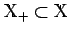

Inhalt Index DeskTop Bronstein

 Funktionalanalysis Stetige lineare Operatoren und Funktionale Fortsetzung von linearen Funktionalen
Funktionalanalysis Stetige lineare Operatoren und Funktionale Fortsetzung von linearen Funktionalen


Eine Abbildung eines Vektorraumes  heißt Halbnorm, wenn sie die folgenden Eigenschaften besitzt:
heißt Halbnorm, wenn sie die folgenden Eigenschaften besitzt:
Ein Vergleich mit den Axiomen des normierten Raumes zeigt, daß eine Halbnorm genau dann eine Norm ist, wenn p(x)=0 nur für x=0 gilt.
Sowohl für theoretische innermathematische Fragestellungen als auch für praktische Belange in vielen Anwendungen der Mathematik hat sich das Problem der Erweiterung eines auf einem linearen Teilraum  gegebenen linearen Funktionals auf den gesamten Raum - um triviale und uninteressante Fälle auszuschließen - unter Beibehaltung gewisser ,,guter`` Eigenschaften als eines der fundamentalsten Ergebnisse herauskristallisiert.
Die Lösung dieses Problems wird durch den Fortsetzungssatz von HAHN-BANACH garantiert.